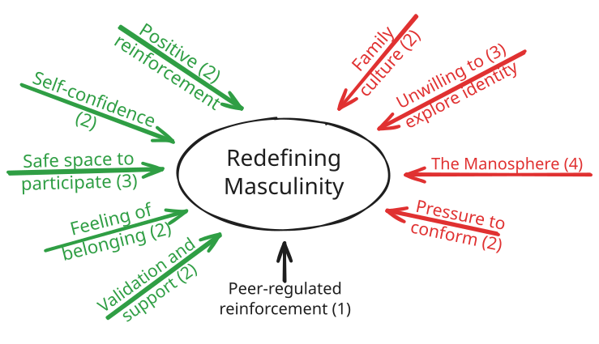

Above: the first page of the 2026 Hawker College Gender Equality
Survey (1).
How frequently do you
experience sexism? (2)
Male
1.97 / 5
Non-binary
2.75 / 5
Female
3.19 / 5
Campaign Objective
To reduce the frequency of sexism and gender-based discrimination to
below 2.5 by 2030.
Primary Targets:
Young men at Hawker (cultural)
Lyndall Henman (policy)
Secondary Targets:
Peer groups of young men (cultural)
Student leadership group (policy)
Theory of Change
IF we (Hawker College) implement programs and clubs that help to
redefine masculinity, THEN female respondents will feel safer in the
school BECAUSE young men will be less likely to perform harmful
masculinity.
Timeline
of
Tactics
S2 2026 – S2 2028
S2 2026
Connect with GSA and SLG
Implement quarterly Gender Equality Survey
Media runs positive story about Hawker
Connect with 3rd party organisations
2027:
Men for Change Club
Kindness
Respect
2027
Start Men for Change Club
Kindness Day
Modern masculinity in Year 11 English
We Matter stand-up
Reflect on results from 2027 surveys
2028
Begin targeting less marginal men
Repeat Kindness Day
Conduct a focus group
Cross-Dress to School Day
Reflect on results from 2028 surveys

Forcefield analysis of inflences, strength out of five.
Communication Strategy
Media Headlines
“‘Tackling it
seriously’: Hawker College to measure impact of gender inequality in
leading new survey.”
“Hawker College’s safe
space for young men that ‘does wonders’ for the community.”
“Men for Change
club at Hawker College sparks new definitions of
masculinity.”
Framing Men for Change
“Work out your brain
whilst working out your body.”
“Providing physically
and emotionally for your loved ones and community.”